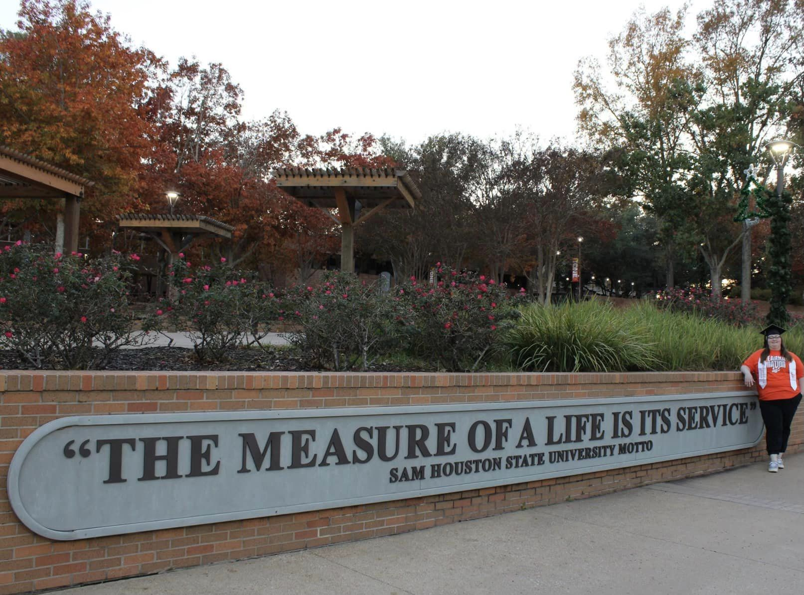

About Me
Hello! As an accomplished Director, my career has been dedicated to optimizing business functions. I embarked on this journey with a focus on management coupled with my journey at Sam Houston State University, earning a Bachelor's degree in Business Administration alongside a minor in Sociology. This professional background has equipped me with extensive insights into organizational behavior, effective communication, and a commitment to the principles of social justice. In addition to my formal education, I hold an IT Specialist certification in HTML and CSS, showcasing my passion and proficiency in web development. This technical expertise complements my strategic leadership role, offering a well-rounded skill set that aligns with the dynamic needs of the modern business landscape. I am fueled by a genuine passion for continuous learning, evident in my pursuit of new skills and certifications. My dedication to self-improvement extends to honing my leadership abilities. I believe in leading by example and fostering a collaborative environment where teams thrive. As a Director, I am committed to contributing to the success of my organization. My approach is grounded in strategic thinking, innovation, and a relentless pursuit of operational excellence. Let's connect to explore how my unique blend of education, technical proficiency, and leadership skills can add value to your organization's growth journey.